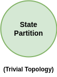
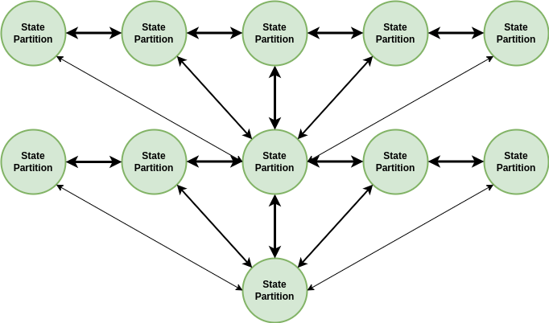
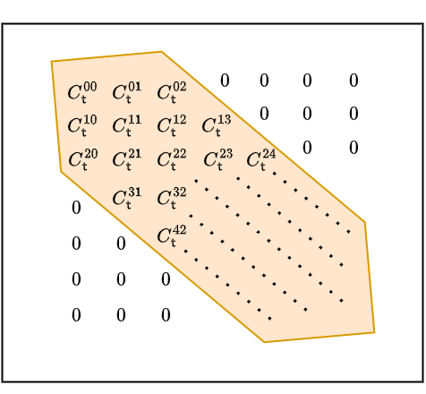
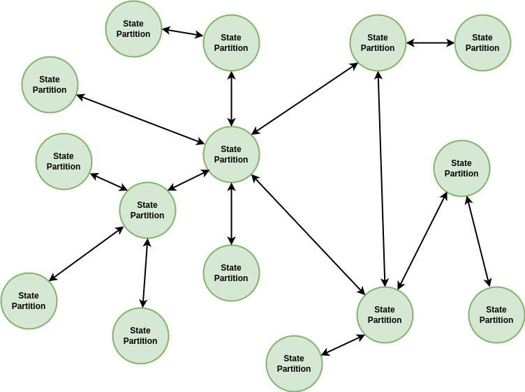
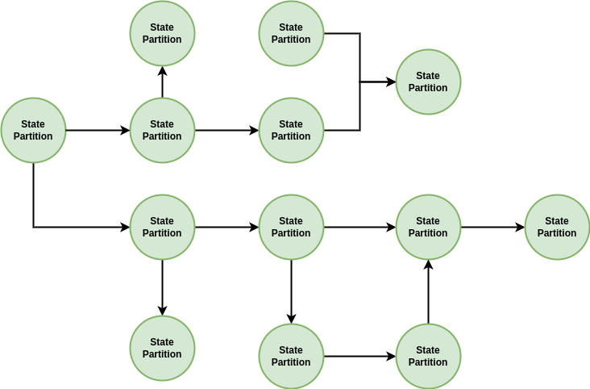
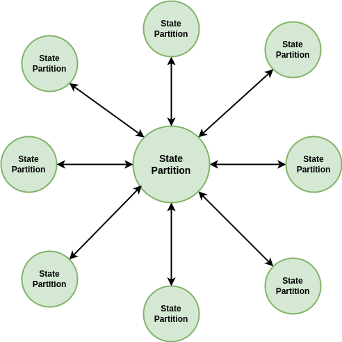

Self-learning simulations series: Archetype simulation problems
Archetype simulations
To end this article, in this section, we’re going to define and develop some archetype simulations which typically appear in the real-world. These archetypes will help to both illustrate how partitioning the state can be helpful to conceptualise the phenomena one wishes to simulate and provide some practical insights into how the stochadex may be configured for different purposes.
We begin with the simple state transition archetype, which refers to simulation environments where there is no obvious computational benefit to partitioning the state into concurrently updating or acting on separate components. There may even be performance benefits from keeping state information all within the same common data structure in memory, but this can depend on the specific problem of study.
In the interest of completeness, we have illustrated the trivial state partition graph topology for this archetype in Fig.~.
In order to understand what sorts of data might be collected about this archetype in realistic scenarios, let’s begin by considering the types of real-world problem domain which have leveraged simulation environments to train control algorithms in the literature. The subset of these which may best suit the simple state transition environment archetype are: %%%%

Based on the examples given above, what kinds of data may be available to infer the state and parameters of a simulation environment using this archetype?
In the case of team sports matches, a team manager could have access to a large body of data which assesses the capabilities of their players before a game, but they must rely on more subjective or limited data to assess the performance of their team (and the opposition) in the middle of a match. The ‘state’ of the whole system in this case can be not only the state of play, but also information about, e.g., fatigue or on-the-day performance of each player for both teams and sets of substitutes.
In a general offline learning setting, realistic historical data collected about the state values for this archetype will typically provide an important mechanism for model determination. Users of this archetype in the real world also typically have access to independent datasets that can be used offline to better determine some parameters of the simulation environment which are not observed directly. In the online learning setting, one typically directly observes some portion of the state values, and may only indirectly observe the other state values, if at all.
The dynamic spatial field archetype refers to simulation environments which have highly-structured, bidirectional communication between state partitions. The graph toplogy of this archetype is totally connected, but some connections matter more than others. As a helpful analogy, you can think of these partitions as being structured topologically in a kind of ‘lattice’ configuration, where connections to other partitions over different distances in the lattice can contribute different importance weights in affecting each local state partition. This lattice structure can be best intuited from a visual discription, so we have illustrated an example graph topology for the dynamic spatial field archetype in Fig.~.

Depending on the spatial dimensionality of the field, we might need to visualise the lattice in Fig.~ as existing in more spatial dimensions than the 2-dimensional example we have illustrated. However, as it turns out, there are many important real-world examples of 2-dimensional spatial systems to control anyway.
Before we move onto a discussion of data, we can study spatial systems which follow this archetype a little more mathematically by adapting the probabilistic formalism we developed in the first part of this book.
Let’s return to this probabilistic formalism that we introduced earlier and note that the covariance matrix estimate with elements \(C^{ij}_{{\sf t}+1}(z)\) represents a matrix that could get very large, depending on the problem. For example; if we encoded the state of a 2-dimensional spatial field of values into the elements \(X^i_{\sf t}\), the number of elements in the covariance matrix \(C^{ij}_{{\sf t}+1}(z)\) would scale as \(4N^2\) — where \(N\) here is the number of spatial points we wanted to encode.
One solution to this scaling problem is to exploit the fact that, in many spatial processes, the proximity of points can strongly determine how correlated they are. Hence, for pairwise distances further than some threshold, the covariance matrix elements should tend towards 0. If we were to place points along the diagonal of \(C^{ij}_{{\sf t}+1}(z)\) in order of how close they are to each other, this threshold would then be represented as a . We have illustrated such a matrix in Fig.~ in which the ‘bandwidth’ is defined as the number of diagonals one needs to traverse from the main diagonal before encountering a diagonal of 0s.

To begin our discussion of data, let’s start by considering the subset of real-world problem domains which fit well within the dynamic spatial field archetype. These would be: %%%%
The distributed state network archetype refers to simulation environments whose bidirectional state partition graph topology is completely arbitrary, requiring no particular connectivity structure at all. Each state partition in this archetype typically refers to the same type of real-world node, object or sub-model. Due to the flexibility in topological structure, this archetype is well-suited to ‘network’ models of realistic phenomena. We have illustrated the state partition graph which fits into this category in Fig.~.

Before discussing what kinds of data are typically available to infer states and parameters of environments in this archetype, it will be informative to consider the various real-world problem domains which apply. The particular subset of these domains which seem to fit well within this classification include: %%%%
The multi-stage pipeline archetype refers to simulation environments with a directional state partition graph with arbitrary connection topology. In this case, each state partition corresponds to a separate stage in some pipeline model of the real-world phenomenon. Directionality in the connection structure is the key distinction between this archetype and the others in our classification scheme. We’ve provided one illustrated example of a multi-stage pipeline state partition graph in Fig.~.

We’re now ready to discuss how multi-stage pipelines are typically observed with data from realistic scenarios. To do this, it will help to first consider which real-world problem domains are best-suited to this archetype structure. From the literature, we can identify these as: %%%%
The centralised exchange archetype refers to simulation environments with a very specific bidirectional state partition graph topology. The graph connection structure is a star configuration where every state partition is connected to the same, centralised state partition which itself has a unique function in the model. In case this description isn’t that clear, we’ve added an illustration of the graph for this archetype in Fig.~.

Before moving on to discuss how data is typically collected for centralised exchanges, it will be informative to list the examples of phenomena where this archetype can be found in the real-world. These problem domains are: %%%%
References
@article{stochadexIIII-WIP,
title = {Self-learning simulations series: Archetype simulation problems},
author = {Hardwick, Robert J},
journal = {umbralcalculations (umbralcalc.github.io/posts/stochadexIIII.html)},
year = {WIP},
}